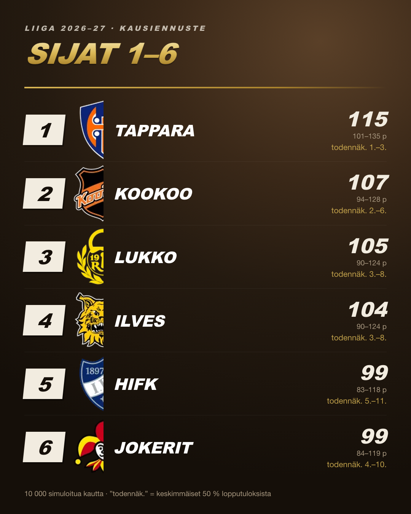
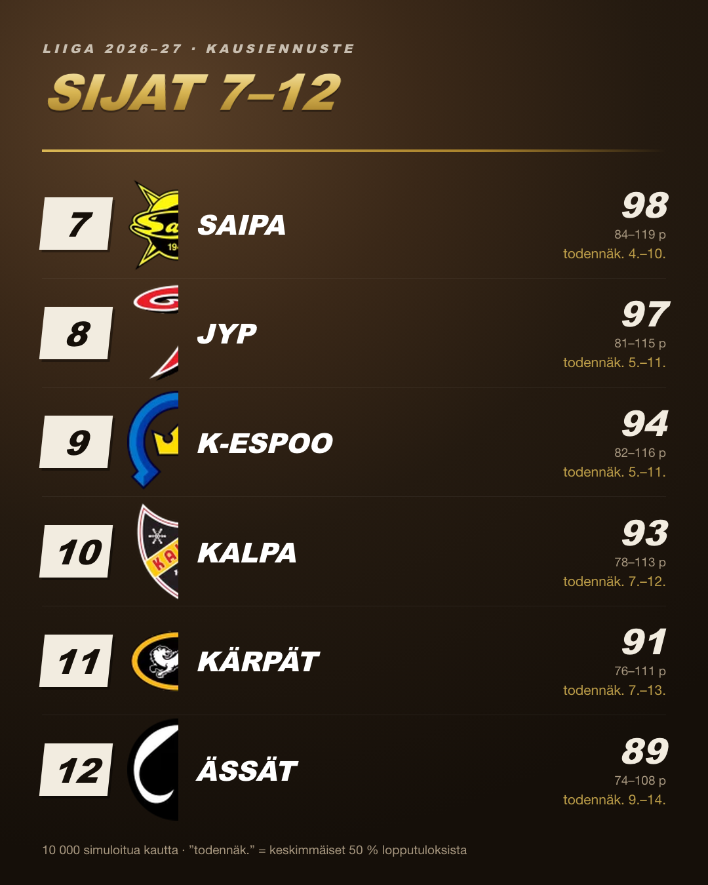
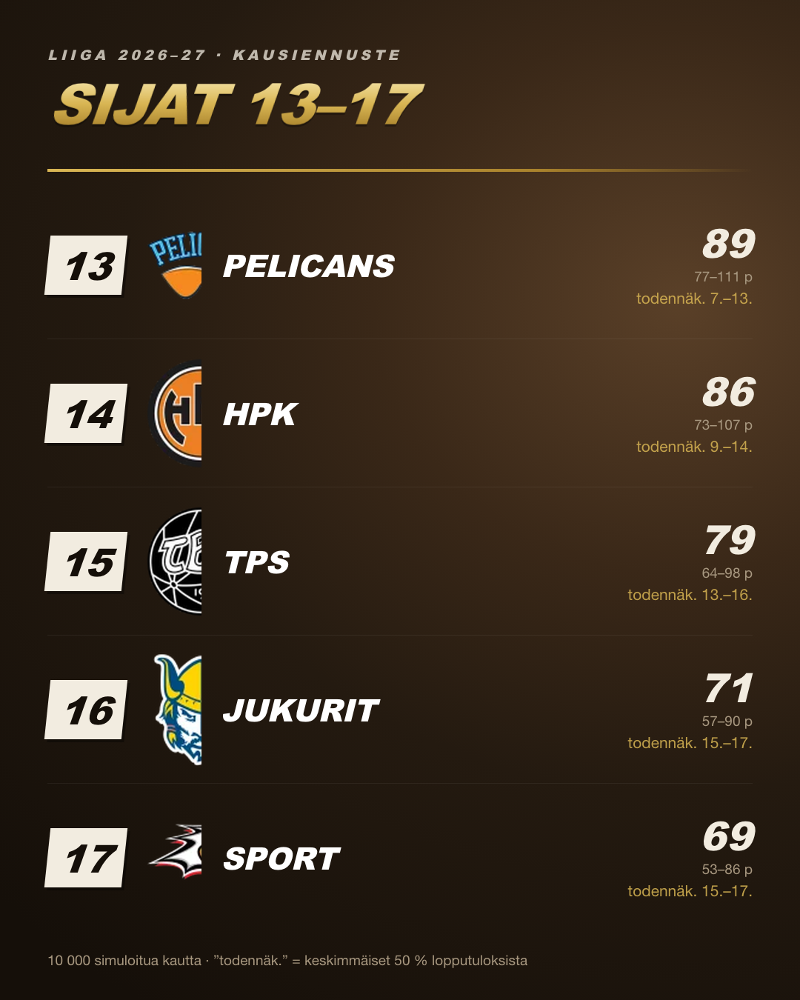
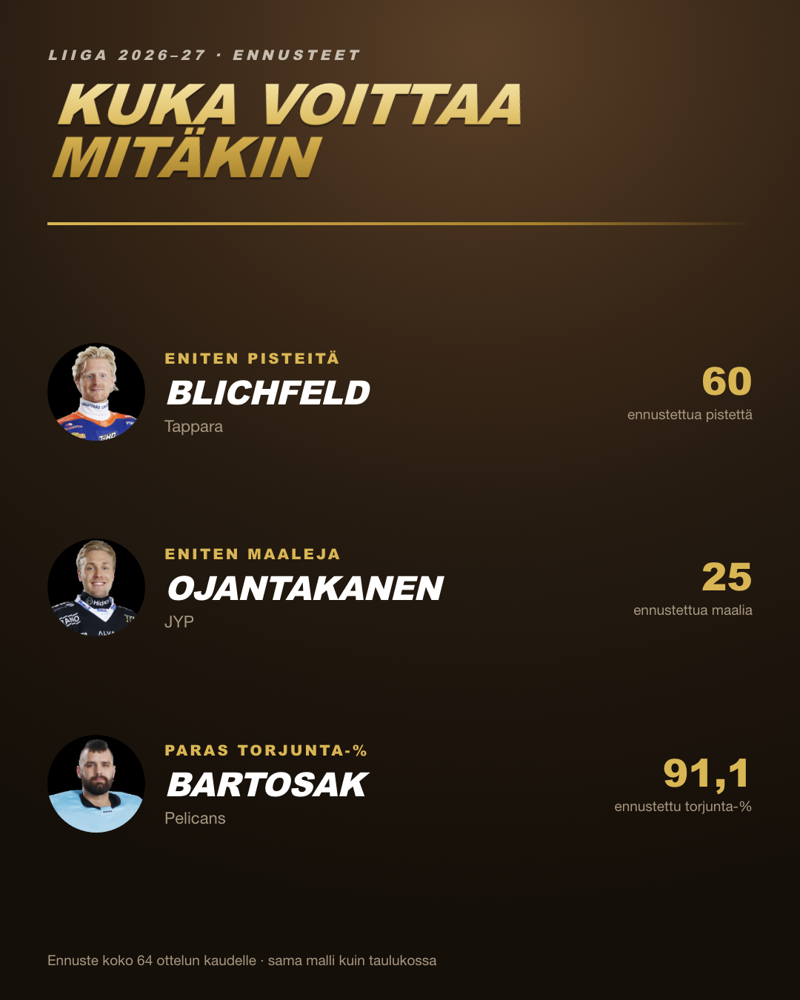
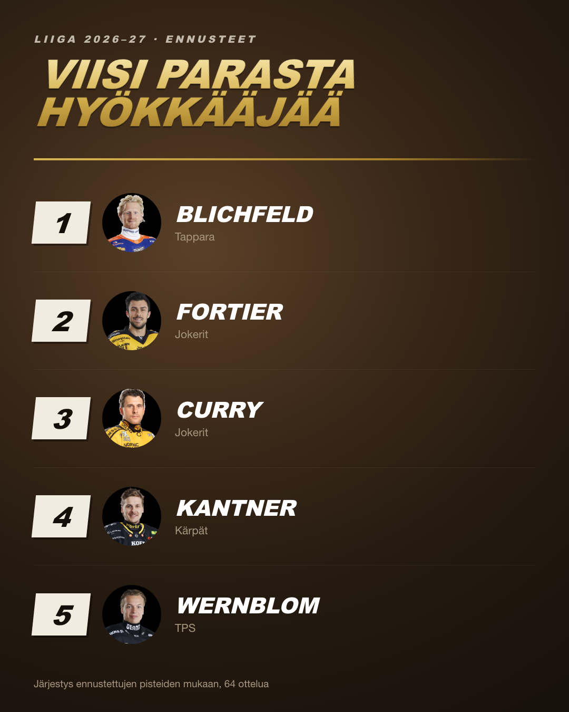
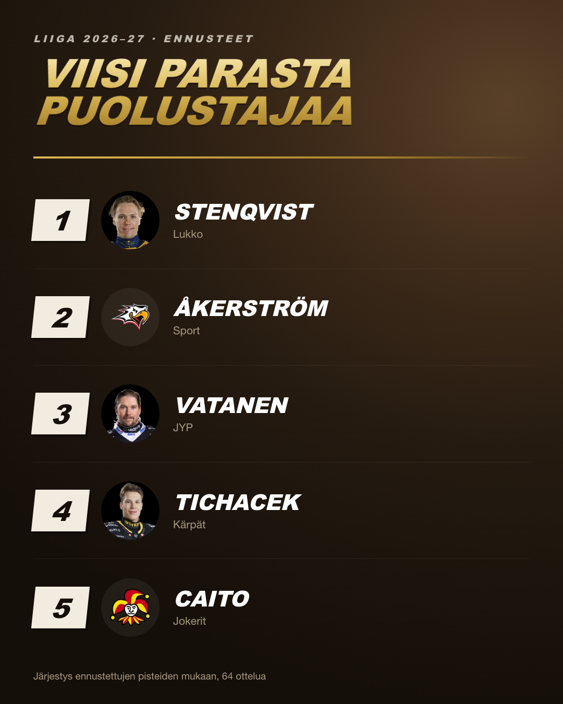
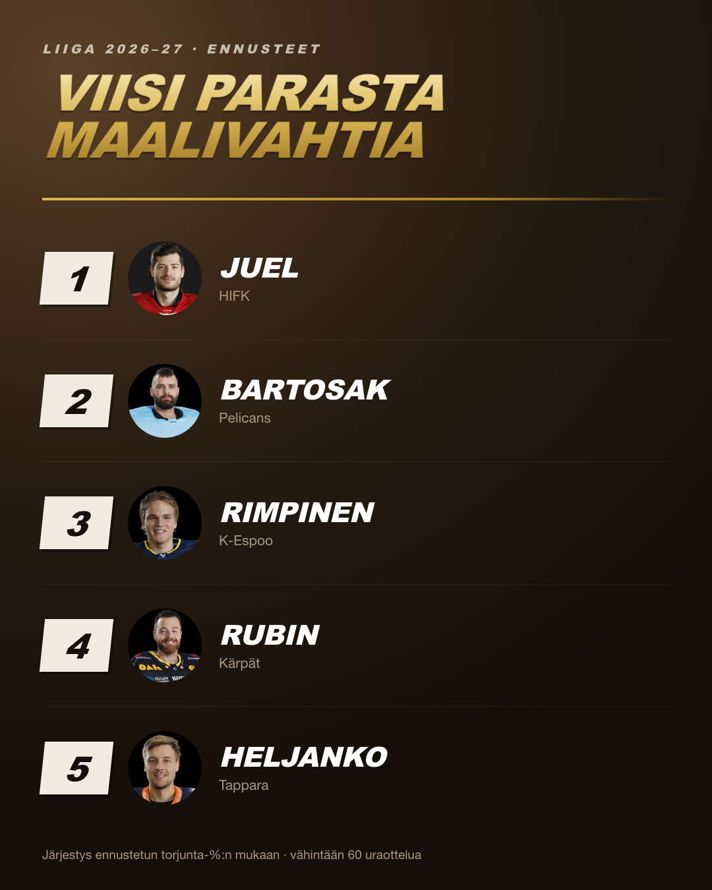
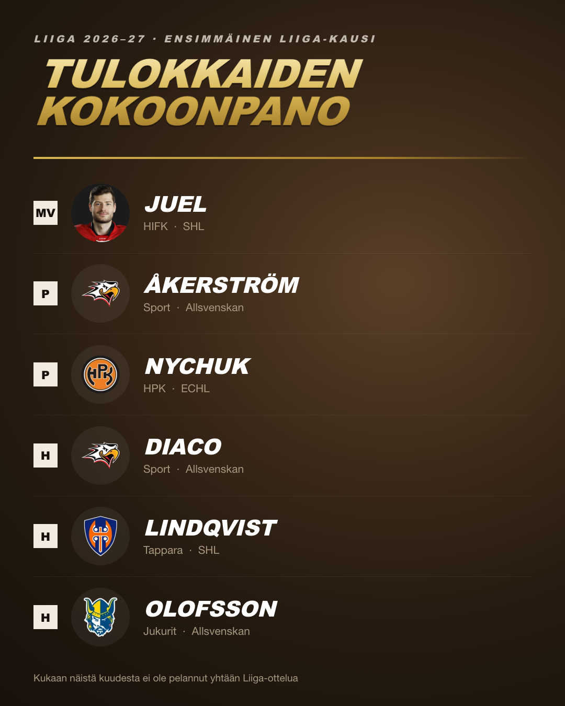

Five 1080×1350 images. Upload slide_1.png …
slide_9.png in order. Regenerate with
python scripts/build_instagram.py.








liiga-2026-27-standings.pdf — Predicted table (4 pages)
liiga-2026-27-players.pdf — Player predictions (6 pages)
Each bundle ends with How it is built, so either can be sent on its own.